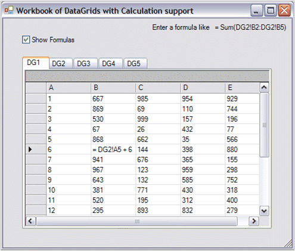

Essential Calculate supports cross-references among several ICalcData objects. This support allows you to have a workbook of CalcDataGrids by using a Windows Forms Tab control. The following discussion is based on the Calculation\Samples\DataGridCalculator sample that ships with the product.

Figure 35: Workbook
To support cross-references among several ICalcData objects, you must register the objects with a single instance of the CalcEngine. Part of the information provided during registration are names associated with each ICalcData object. To reference a particular cell in an ICalcData object, you need to use its name along with the column and row to determine the proper reference. For example, say, in an ICalcData object whose name is Sales; To reference column 5, row 3, you must use Sales!E3. The name is separated from the column and row reference by an exclamation point. In the above screenshot, the formula = DG2!A5 + 6 would add 6 to the value in row 5, column 1 in sheet DG2.
Here is the FormLoad method for the sample screenshot depicted above. Using the designer, a TabControl is dropped on a form and five TabPages are added. The pages are named DG1, DG2, …, DG5. On each TabPage, a CalcDataGrid is set with the DockStyle set to Fill. This is all done through the designer.
|
[C#]
Syncfusion.Calculate.CalcEngine engine;
private void DataGridWorkBookForm_Load(object sender, System.EventArgs e) {
// 1) Set the datasource for the DataGrid. this.dataGrid1.DataSource = GetARandomTable(); this.dataGrid2.DataSource = GetARandomTable(); this.dataGrid3.DataSource = GetARandomTable(); this.dataGrid4.DataSource = GetARandomTable(); this.dataGrid5.DataSource = GetARandomTable();
// 2) Call this to reset static members. Syncfusion.Calculate.CalcEngine.ResetSheetFamilyID();
// 3) Create the engine. engine = new Syncfusion.Calculate.CalcEngine(this.dataGrid1);
// 4) Track dependencies required for auto calculations. engine.UseDependencies = true;
// 5) Register multiple ICalcData objects for cross sheet references. int sheetfamilyID = CalcEngine.CreateSheetFamilyID(); engine.RegisterGridAsSheet("DG1", this.dataGrid1, sheetfamilyID); engine.RegisterGridAsSheet("DG2", this.dataGrid2, sheetfamilyID); engine.RegisterGridAsSheet("DG3", this.dataGrid3, sheetfamilyID); engine.RegisterGridAsSheet("DG4", this.dataGrid4, sheetfamilyID); engine.RegisterGridAsSheet("DG5", this.dataGrid5, sheetfamilyID); } |
|
[VB]
Dim engine As Syncfusion.Calculate.CalcEngine
Private Sub DataGridWorkBookForm_Load(sender As Object, e As System.EventArgs)
' 1) Set the datasource for the DataGrid. Me.dataGrid1.DataSource = GetARandomTable() Me.dataGrid2.DataSource = GetARandomTable() Me.dataGrid3.DataSource = GetARandomTable() Me.dataGrid4.DataSource = GetARandomTable() Me.dataGrid5.DataSource = GetARandomTable()
' 2) Call this to reset static members in case the other form loaded first. Syncfusion.Calculate.CalcEngine.ResetSheetFamilyID()
' 3) Create the engine. engine = New Syncfusion.Calculate.CalcEngine(Me.dataGrid1)
' 4) Track dependencies required for auto calculations. engine.UseDependencies = True
' 5) Register multiple ICalcData objects for cross sheet references. Dim sheetfamilyID As Integer = CalcEngine.CreateSheetFamilyID() engine.RegisterGridAsSheet("DG1", Me.dataGrid1, sheetfamilyID) engine.RegisterGridAsSheet("DG2", Me.dataGrid2, sheetfamilyID) engine.RegisterGridAsSheet("DG3", Me.dataGrid3, sheetfamilyID) engine.RegisterGridAsSheet("DG4", Me.dataGrid4, sheetfamilyID) engine.RegisterGridAsSheet("DG5", Me.dataGrid5, sheetfamilyID)
' DataGridWorkBookForm_Load End Sub |
The following is an explanation of the preceding code.
1. Assign the datasources to the DataGrids.
2. ResetSheetFamilyID clears any static members of the CalcEngine class and sets the engine state to operate with a single ICalcData object.
3. Creates an instance of the CalcEngine object.
4. Sets the engine object to track calculation dependencies so that cells can be automatically updated as other cell values change.
5. This is the code that registers a name for each ICalcData object so that the CalcEngine can support references across ICalcData objects.